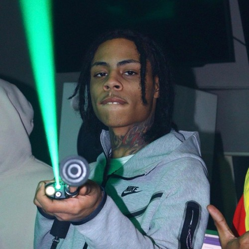

Kevin Perez, A.K.A "Kay Flock"
FREE KAY FLOCK HE IS A VICTIM OF THE STATE OF NEW YORK'S AGENDA TO ELIMINATE THE CONSTITUTIONAL RIGHT TO BEAR ARMS AND CONDUCT LOGICAL SELF DEFENSE

On December 16th, 2021, A then-18 year old Kevin Perez allegedly shot a 24 year old man outside of a barber shop around 10:00 AM.
The victim, Oscar Hernandez, was found with a firearm in his jacket pocket. He was also found with 2 gunshot wounds, one in the back and one in the neck.
Now here, it would be logical to conclude that this in fact does NOT seem in favor for Kay Flock.
However, according to this video that shows the perpetrator walking past the barbershop from where Oscar, Hereas known as "Wasca" exits from, Wasca come out with his hand on his pocket with an agressive demeanor, following Kay Flock to near the end of the block, until he is shot and killed.
The reason for this altercation happening is due to Kay Flock, a Member of the infamous Sex Money Murder Bloods gang and of the 700 DOA/sevside alliance walking through rival territory, that being of the Harlem OY's. Wasca is alleged to be an older member of the OY's and has served prison time for previous crimes. On this unfortunate day, the perpatrator also apparently taunted the OY's in a FaceTime call showing them that he is armed and around the corner.
With the fact that the people inside the barbershop knew their rival (who is allegedly kay flock) will come around the corner and walk past them, Wasca stepped up to the challenge to confront him, and was also armed with a firearm of his own. It can be inferred that Wasca was looking to possibly kill Kay Flock, and actually, this is what would've happened should Kay Flock not have pulled out his firearm first and shot him, because according to the camera, Wasca kept approaching Kay Flock knowing he had a firearm on him (Wasca knew he himself concealed a firearm just like Kay Flock did) but considering he never pulled it out, he didn't have the heart to immediately shoot him, unlike Kay Flock who at the hint of a possible shootout, pulled his out and allegedly killed Wasca.
In another video, It's shown that the perpetrator walked past the barbershop, but didn't follow suit with what the official police description said (he walked into the barbershop and looked for problems). Instead, the perpetrator walked past the barbershop, stopped to look in, but began leaving and flicked his wrist to signify "I'm not worried about that". At that point, Wasca came out, and a confrontation began. So there is no doubt in my mind that this is a classic case of self defense. The victim came out looking for problems, and the accused simply did not engage in the bufoonery up until he felt his life was in danger, and considering he had a female with him, the life of the female too.
However, the State of New York is doing everything in their power to throw the book at Kay Flock and make an example out of him. Keep in mind he is a young multi-millionaire who came of out the bronx Ghetto's and signed record deals worth millions, with fans around the world and known as the "face" of his genre, Bronx NY drill.
In fact, the prosecutors have not turned in the names of the witnesses to the defense of Kay Flock, lead by Jeffrey Lichtman for fear of retribution and witness intimidation, despite the defense offering a compromise in which only he knows the names so that he can cross-examine the witnesses and make sure they are telling the truth. As of November 2022, its been nearly a year since kay flock has allegedly commited this action, and a long time since he's been locked up, with no progress into the court hearing since the prosecutors declare they are still not ready.
It really is sad to see such potential being thrown away due to a mishap in where he allegedly wound up on enemy territory and had to kill a rival on their turf for fear of dying to him. With tracks such as "Is Ya Ready","PSA", "Brotherly Love" and "Doomsday", he really had the Bronx Drill scene in a chokehold, and would be able to bring him, his friends and family out of the crime-ridden Bronx ghettos, where these people merely adapted to their environment to survive.
MUSIC
BACKGROUND
JEFFREY LICHTMAN